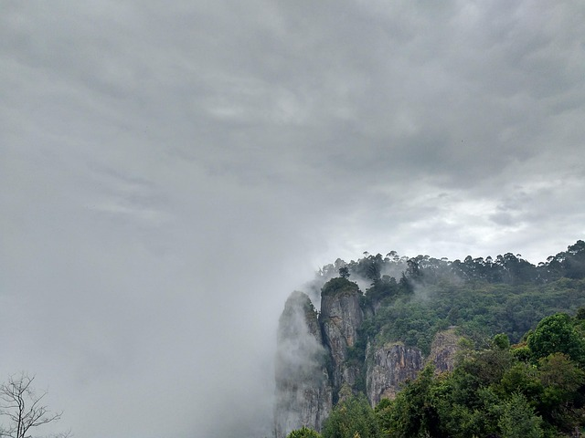
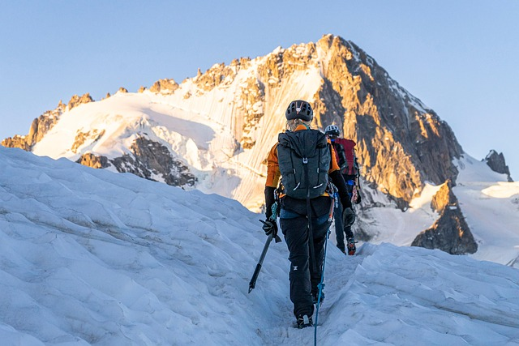
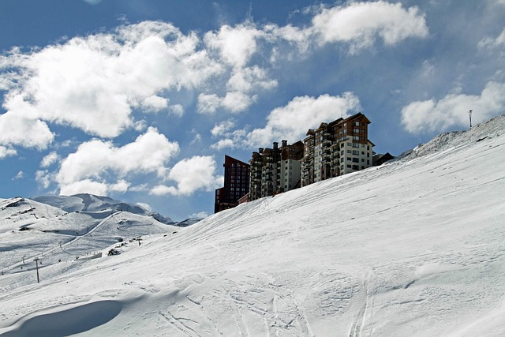
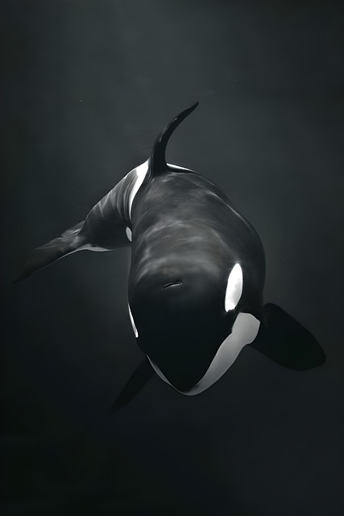
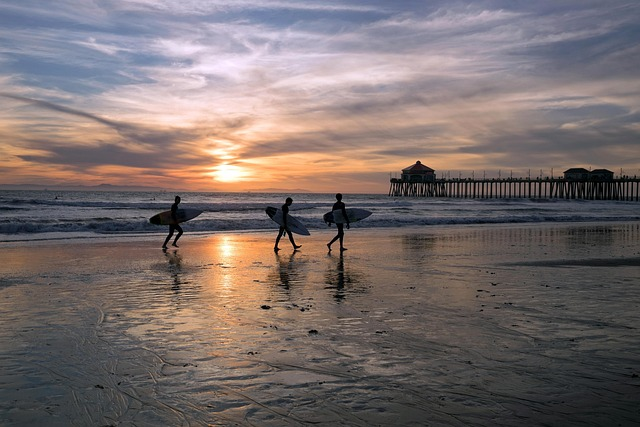
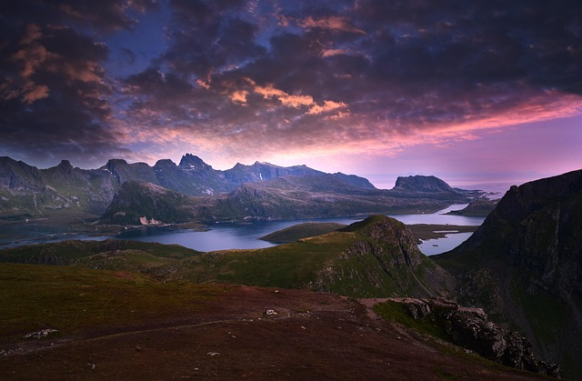
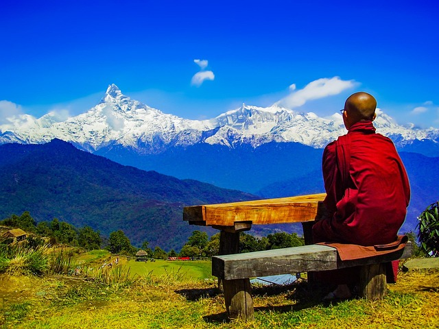

🌍Мир экстремальных видов спорта
С незапамятных времен человечество испытывало потребность бросать вызов собственным пределам. Будь то восхождение на гору, прыжок в пропасть или покорение гигантской волны, мы всегда искали ту искру волнения, которая заставляет нас чувствовать себя по-настоящему живыми. Экстремальные виды спорта родились из этого стремления: доведение тела и разума до предела в естественной или городской среде, где риск и адреналин становятся нашими лучшими спутниками.
Речь идет не только об опасности, но и о личностном росте, свободе и связи с природой. Каждый прыжок, каждый заплыв, каждое восхождение — это победа над страхом и доказательство того, что мы способны на большее, чем когда-либо могли себе представить.
Если вы только начинаете исследовать этот мир, вот некоторые виды активного отдыха, о которых вы, вероятно, уже слышали:
- Серфинг: катание на гигантских волнах на доске.
- Скалолазание: восхождение по скалам или искусственным стенам.
- Прыжки с парашютом: прыжок с самолета и полет в свободном падении.
- Рафтинг: спуск по бурным рекам на плоту со снаряжением.
- Горный велосипед (MTB): езда на велосипеде по горам и тропам.
- Дайвинг: исследование глубин океана.
- Банджи-джампинг: прыжок в пропасть с моста, будучи прикрепленным к эластичному тросу.
- Кайтсерфинг: скольжение по воде с помощью кайта.
Зачем их практиковать?🚀
Потому что они заставляют тебя чувствовать себя живым. Потому что нет ничего лучше учащенного сердцебиения перед прыжком, спокойствия парения в воздухе или удовлетворения от достижения вершины после огромных усилий. Экстремальные виды спорта не только бросают вызов физически, но и учат тебя контролировать страх, доверять себе и наслаждаться настоящим моментом как никогда раньше.
Осмелитесь ли вы попробовать? Первый шаг — получить информацию, соблюдать меры безопасности и, самое главное, позволить себе окунуться в мир приключений. Мир полон невероятных мест, которые ждут своего открытия. Осмелитесь ли вы жить полной жизнью!
Нажмите на карту, чтобы увидеть несколько примеров.

Китай - Чжанцзяцзе
Взбираясь на колонны «Аватара».
Перу - Уарац
Восхождение в Андах. Вершины высотой 6000 м.
Чили - Долина Невадо
Катание на лыжах и сноуборде.
Норвегия - Фьорды
Ныряние в кристально чистых водах.
Австралия - Голд-Кост
Серфинг мирового класса.
Новая Зеландия - Милфорд-Саунд
Каякинг среди фьордов.
Бразилия - Рио-де-Жанейро
Бейсджампинг с горы Шугарлоф.

Россия - Камчатка
Параглайдинг над вулканами.

Непал - Гималаи
Прыжки с парашютом над Эверестом.
